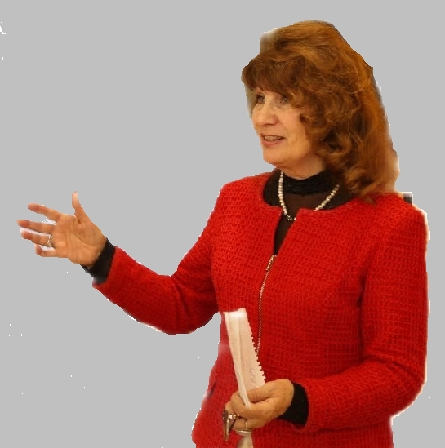

';">письма, предисловия, член редколлегии альманаха «Затесь».
схема боевых маршрутов Астафьева, свидетель.
исполнил песню об Астафьеве композитора Шемрякова.
мемуары в альманахе, стихи отца.
иллюстрации к произведениям Астафьева, ученица Г. Паштова.
первая исполнительница записей романсов Пороцкого.
рук. Красноярского камерного оркестра, друг Пороцкого.
дарили диски с фильмами об Астафьеве.
воспоминания о послевоенном детстве, друг клуба.
предложила читать отрывки из Астафьева вслух.
читал отрывки из романа «Прокляты и убиты».
привезли 16 воспитанников на встречу.
рассказ «Четыре чуда на Святой Земле».
выставка «Русь моя земная и небесная», стихи.
скульптурные проекты под рук. Д. Шавлыгина.
автографы Астафьева, послесловие к книге.
слайд-рассказ показывали в России и за рубежом.
рассказы о путешествиях, засл. спасатель.
видеопривет на встрече о старообрядцах.
книги о старообрядцах, бывший директор музея.
отказ от джаза, патриотический репертуар.
концерт на презентации альманаха.
поэтическая драма на стихи Мельникова.